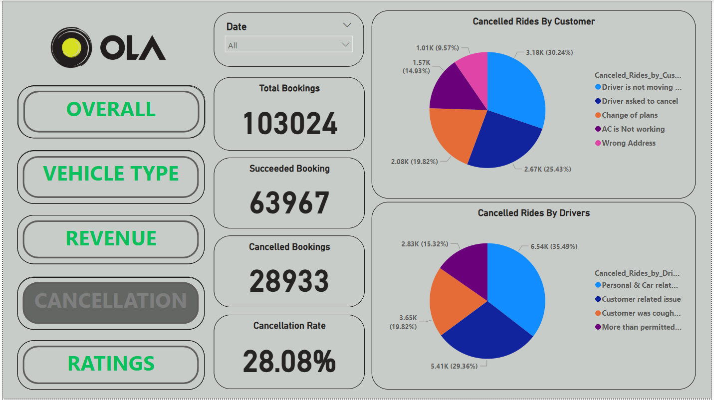
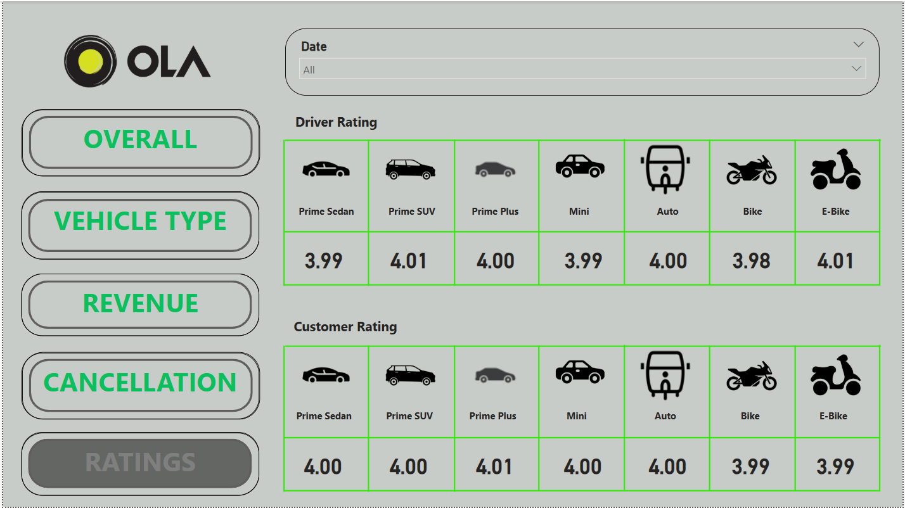
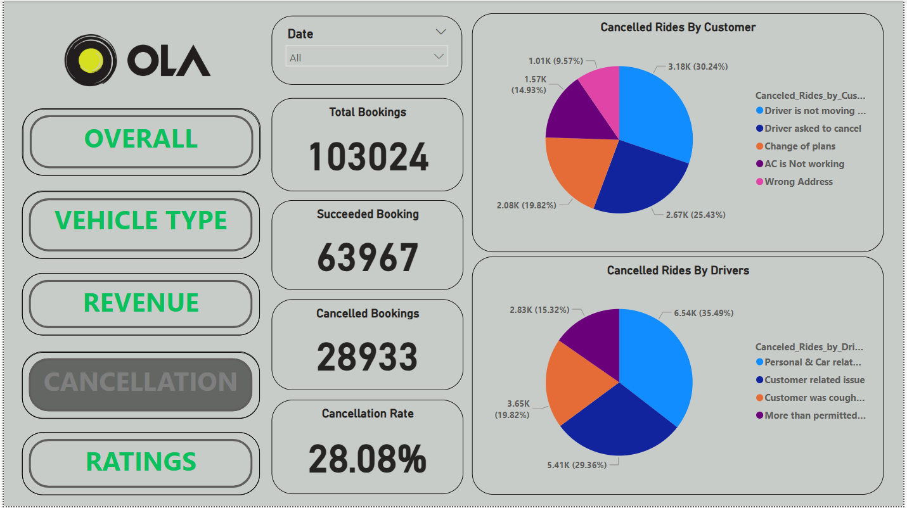
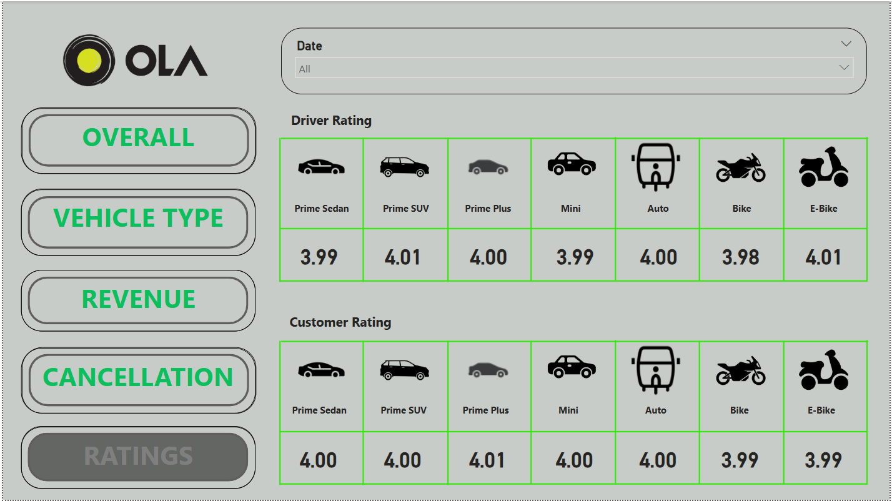

🚖 OLA Ride Prediction
An analytical project using **SQL & Power BI** to predict ride trends, cancellations, and revenue insights.
Project Overview
- **SQL:** Data extraction, transformation, and trend analysis.
- **Power BI:** Interactive dashboards for insights visualization.
This project enables **data-driven decision-making** for ride-sharing businesses by analyzing customer behavior, ride cancellations, and revenue trends.
SQL Problem Statement
- Retrieve all successful bookings.
- Find the average ride distance for each vehicle type.
- Get the total number of cancelled rides by customers.
- List the top 5 customers with the highest number of rides.
- Find rides cancelled by drivers due to personal & car issues.
- Retrieve all rides where payment was made using UPI.
Power BI Insights
- **Ride Volume Over Time** – Analyze ride trends per day/week.
- **Booking Status Breakdown** – Success vs. Cancelled rides.
- **Top 5 Vehicle Types by Ride Distance** – Best-performing vehicle types.
- **Customer vs. Driver Ratings** – Understanding satisfaction.
- **Revenue by Payment Method** – Cash, UPI, Credit Card analysis.
Dashboard Preview


 



*This dashboard visualizes ride trends, revenue insights, and cancellation patterns to help optimize ride-sharing operations.*